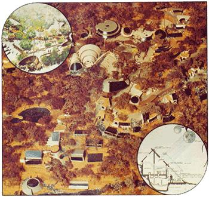

The founders of this magazine have long believed that-if the planet is to endure-our society must completely change the way it operates. Change from its current and insane energy-intensive, throwaway life to a steady-state, "use it up, wear it out, make it do, or do without" way of living.
What we need are whole towns that can function without any internal-combustion-engine-powered vehicles at all. Communities that are almost entirely food and energy self-sufficient. Mini-cities designed to operate on-and only on-their incoming solar radiation. Villages laid out so that all waste is immediately recycled into useful products. Hamlets of quiet, serenity, fresh air, and pure water.
That's what we need . . . and that's what some of MOTHER's staffers set out to design back in 1972. Nobody else seemed much interested in our ideas then. So we figured we'd build our dream community just for ourselves.
Then simultaneous recession and inflation-mixed with other assorted catastrophes-settled in across the globe . . . and, overnight, a great number of individuals and families became intensely interested in our eco-community concept.
So we expanded our research on the idea and-during the winter of 1974-75-worked with three of Professor George Ramsey's Georgia Tech architecture classes to design a 1,000-inhabitant eco-village. (Some of the last class' models and renderings are shown here. Ramsey and all his students were a genuine pleasure to work with.) And, by gosh, we can do it. We now know how to make a self-sufficient town work.
Physically and technically, that is. The human element, however, still has us stumped.
In short-and oversimplified to a painful degree-the people who have the money that it will take to build this community of the future frequently can't seem to understand why we won't allow cars and flush toilets into the village. ("I mean, automobiles are necessary to the American way of life.") And the freaks who do understand the need for keeping the cars out usually become unbearable asses during any discussion of the money-or honest toil-we'll need to construct the eco-town. ("Hey, man . . . like I just can't bring myself to talk about capitalistic things like money . . . and I want to contribute ideas, not slave labor, to this project . . . you know?")
So OK. That's fine with us. We've now thrown all the outside money people and outside idea people outside-where they belong-and gone back to designing and building a research community of our own.
We'll keep you posted.
|
 |
|
|